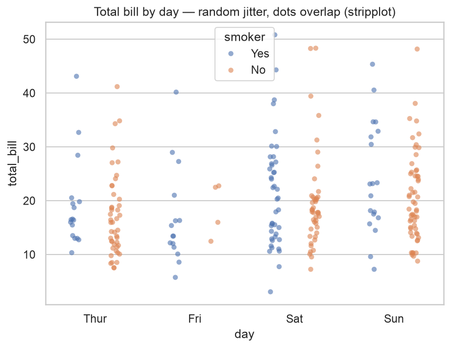
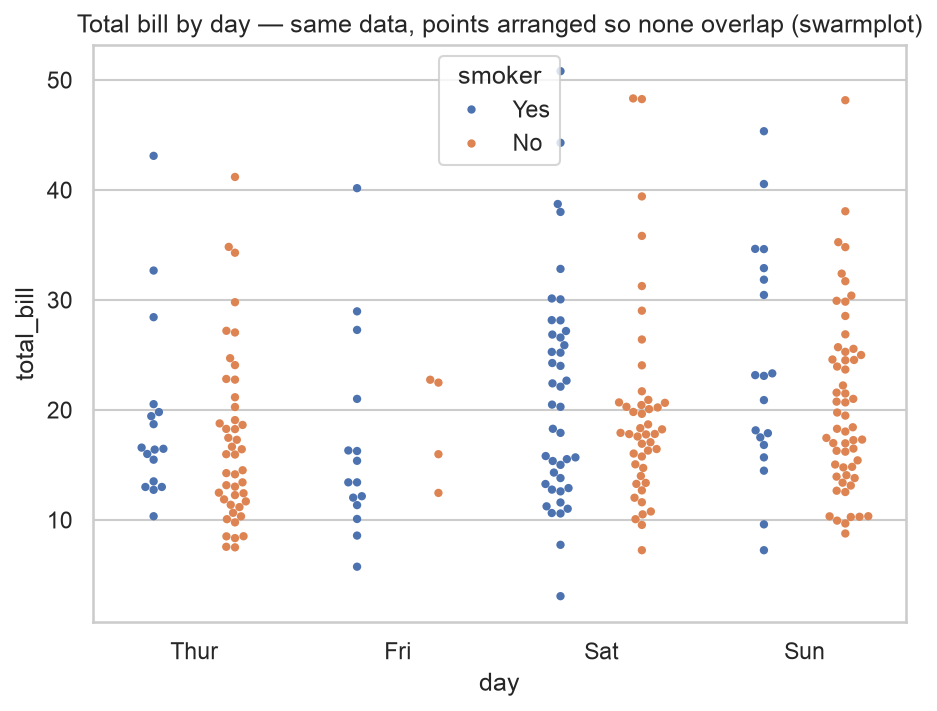
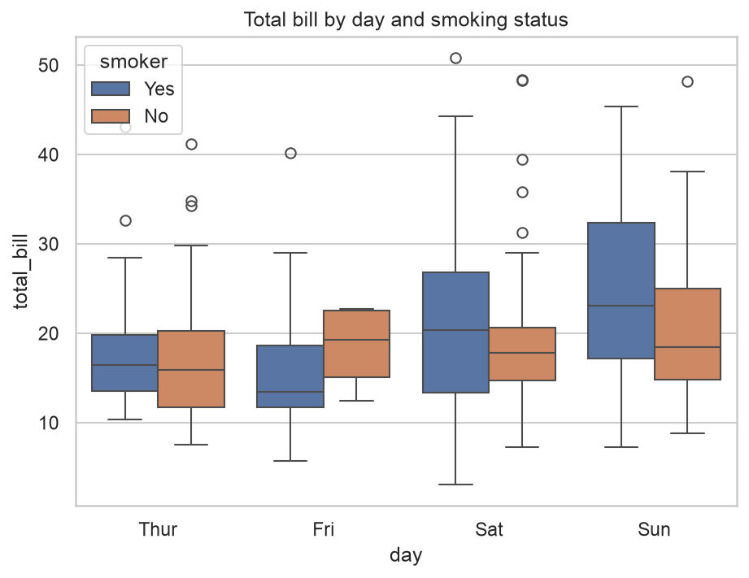
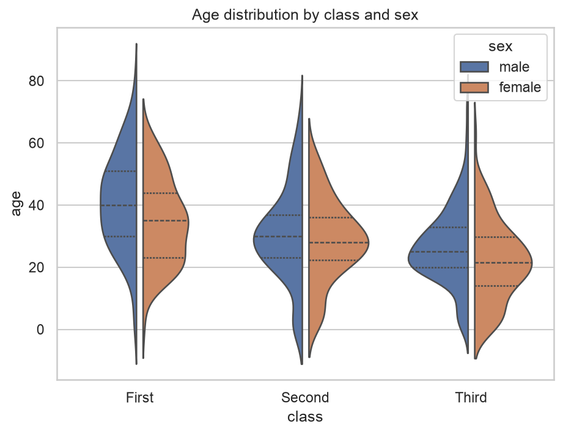
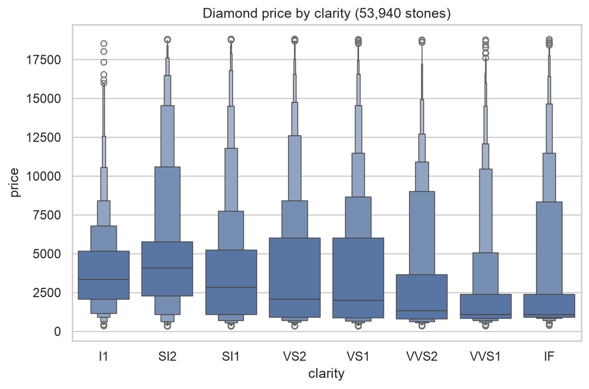
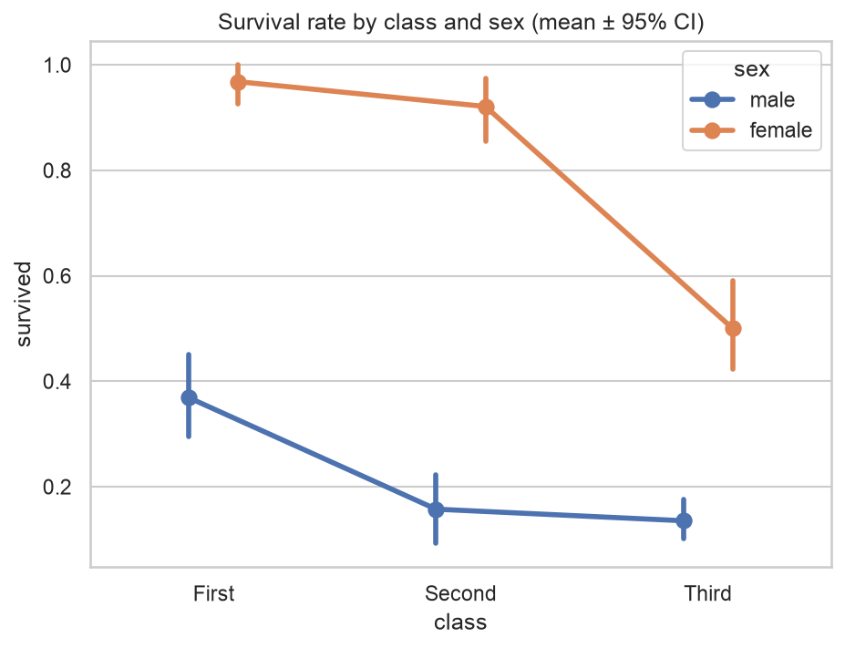
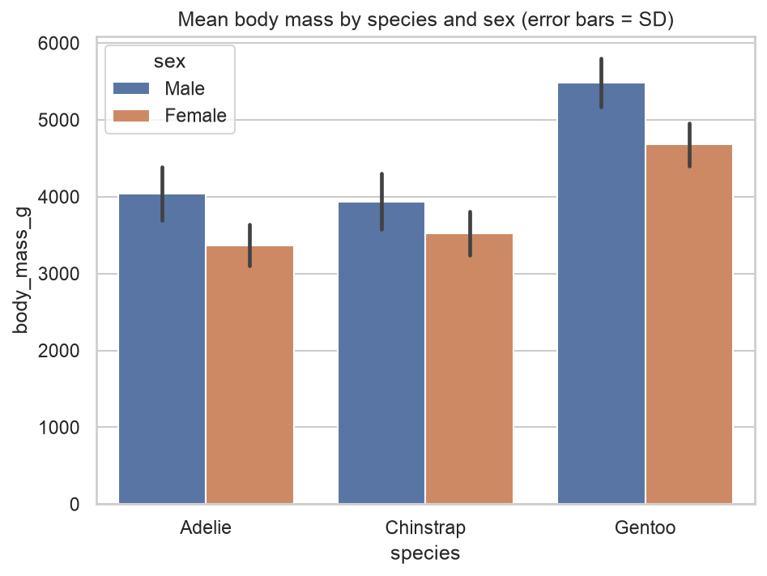
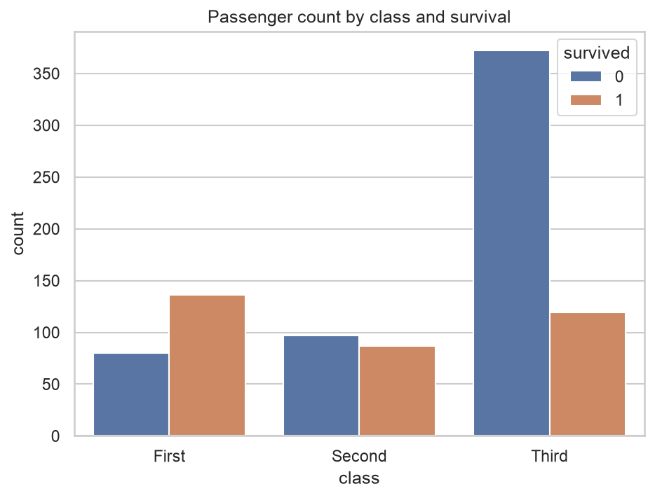
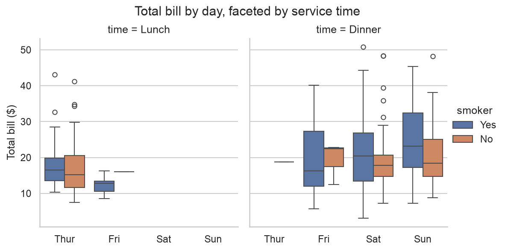

Home › 3 · Comparing a quantity across categories
3 · Comparing a quantity across categories
how does a measure — its average, its whole distribution, or just the count — differ between groups?
| Function | Level | Dataset | In one line |
|---|---|---|---|
stripplot | axes | tips | every observation as a point, random jitter (dots overlap) |
swarmplot | axes | tips | same data, points arranged so none overlap |
boxplot | axes | tips | median, quartiles and outliers per category |
violinplot | axes | titanic | a mirrored KDE — the full distribution shape per category |
boxenplot | axes | diamonds | like a boxplot but resolves the tails (large samples) |
pointplot | axes | titanic | an estimate per category joined by lines, to read the trend |
barplot | axes | penguins | an aggregate (mean by default) per category, with error bars |
countplot | axes | titanic | how many rows fall in each category |
catplot | figure | tips | any of the above, faceted across subsets |
one minimal, idiomatic example per function. Each ends by saving a PNG to images/. The first eight come in families — the notes focus on which to reach for.
Imports for this notebook
import matplotlib.pyplot as plt
import pandas as pd
import seaborn as sns
sns.set_theme(style="whitegrid")
penguins = sns.load_dataset("penguins")
tips = sns.load_dataset("tips")
titanic = sns.load_dataset("titanic")
diamonds = sns.load_dataset("diamonds")
CLASS_ORDER = ["First", "Second", "Third"]
stripplot
Axes-level. A scatter along a categorical axis: one dot per observation, placed with a small random horizontal jitter. Dots are allowed to overlap.
The next two plots use the same data (tips, total bill by day) so the
difference between the two is visible directly.

sns.stripplot(
data=tips,
x="day", y="total_bill",
hue="smoker", dodge=True, alpha=0.6,
ax=ax,
)
ax.set_title("Total bill by day — random jitter, dots overlap (stripplot)")
Best for
- Showing all the data along a category axis when you don't need every point separated — a quick "what's actually in each group".
- Works at any N: it never refuses, it just gets denser.
alphaandjittermanage the crowding;dodge=Truesplitshuegroups. - As a thin layer under a box or violin, so the summary and the raw points sit together.
stripplot vs swarmplot — same goal (draw every point), opposite method:
stripplot |
swarmplot |
|
|---|---|---|
| Horizontal position | random jitter | computed so no two points touch |
| Overlap | yes | never |
| Read density from width? | no | yes — the pile is wider where there are more points |
| N per category | unlimited (turns into a smear) | a few hundred, then it warns and drops points |
| Cost | trivial | can be slow |
Reach for stripplot when N is large or it's just a backing layer; reach for
swarmplot when N is small and the shape of the pile is the point.
swarmplot
Axes-level. The same points as the strip plot above, but each one is shifted along the category axis by a computed amount so that none overlap. The width of the resulting "swarm" at any height is proportional to how many points sit there — so the outline reads like a discrete violin.

sns.swarmplot(
data=tips,
x="day", y="total_bill",
hue="smoker", dodge=True, size=4,
ax=ax,
)
ax.set_title("Total bill by day — same data, points arranged so none overlap (swarmplot)")
Best for
- The most honest categorical view when it fits: every point drawn, none hidden, and the density is legible from the swarm's width — no binning, no smoothing.
- Small N — a few hundred points per category at most.
- Not for large N: seaborn prints
X% of the points cannot be placedand silently drops them, so the picture is quietly wrong. Switch toviolinplot, orboxplotwith astripplotlayer.
Compared with the strip plot above: stripplot is faster and unbounded but its
random jitter hides how many points overlap; swarmplot shows that exactly, at
the cost of a hard ceiling on N.
boxplot
Axes-level. The five-number summary per category: median line, inter-quartile box, whiskers to 1.5×IQR, points beyond that.

sns.boxplot(
data=tips,
x="day", y="total_bill",
hue="smoker",
ax=ax,
)
ax.set_title("Total bill by day and smoking status")
Best for
- Comparing centre and spread across many groups at any N — compact, familiar, robust to outliers.
- Quick read of skew (median off-centre in the box) and of which groups overlap.
- Not able to show shape: a two-humped group and a flat one can produce the same box. Overlay a
stripplot, or useviolinplot.
violinplot
Axes-level. A KDE mirrored into a "violin" for each category — the distribution
shape a boxplot can't show. split=True packs two hue levels into one violin.

sns.violinplot(
data=titanic,
x="class", y="age", order=CLASS_ORDER,
hue="sex", split=True, gap=0.1, inner="quart",
ax=ax,
)
ax.set_title("Age distribution by class and sex")
sns.move_legend(ax, "upper right")
Best for
- Showing skew and multiple modes across categories — the reason to prefer it over a boxplot.
split=Truefor a tight two-group comparison;inner="quart" | "box" | "stick" | "point"picks the summary drawn inside.- Not for small groups (the KDE invents shape), and it bulges past hard limits — the violins above dip below age 0, which is impossible. Pass
cut=0to clip at the observed min/max.
boxenplot
Axes-level. A boxplot extended with successively smaller boxes for further-out quantiles, so the tails of a large sample are drawn instead of dumped as a cloud of outliers. (Also called a letter-value plot.)

CLARITY_ORDER = ["I1", "SI2", "SI1", "VS2", "VS1", "VVS2", "VVS1", "IF"] # worst -> best
sns.boxenplot(
data=diamonds,
x="clarity", y="price", order=CLARITY_ORDER,
color="C0",
ax=ax,
)
ax.set_title(f"Diamond price by clarity ({len(diamonds):,} stones)")
Best for
- Large samples (thousands+) where a boxplot's single whisker throws away most of the interesting tail.
- Seeing how skew and tail-heaviness change across categories.
- Not worth it for small N — the extra boxes are just noise; a plain
boxplotsays the same thing.
pointplot
Axes-level. One estimate per category (mean by default) with an error bar, connected by lines across the category axis.

sns.pointplot(
data=titanic,
x="class", y="survived", order=CLASS_ORDER,
hue="sex", dodge=0.2, errorbar=("ci", 95),
ax=ax,
)
ax.set_title("Survival rate by class and sex (mean ± 95% CI)")
Best for
- Reading a trend across an ordered category, and interaction effects — do the
huelines stay parallel, or cross? - A 0/1 outcome: the mean is a rate, so this is survival probability with a CI.
- Not for nominal categories where "between" has no meaning — the connecting line implies an order that isn't there. Use
barplot.
barplot
Axes-level. One aggregate per category drawn from zero (mean by default; set
estimator), with an error bar.

sns.barplot(
data=penguins,
x="species", y="body_mass_g",
hue="sex", errorbar="sd",
ax=ax,
)
ax.set_title("Mean body mass by species and sex (error bars = SD)")
Best for
- Comparing a handful of summary values when the zero baseline is meaningful.
- Swappable statistic:
estimator="median",estimator="sum", etc., with a matchingerrorbar. - Not for showing a distribution (it's one number per bar), and misleading when the quantity has no true zero — use
pointplotthen.
countplot
Axes-level. A barplot whose statistic is "how many rows" — one bar per
category or per hue combination. The categorical cousin of histplot.

sns.countplot(
data=titanic,
x="class", order=CLASS_ORDER,
hue="survived",
ax=ax,
)
ax.set_title("Passenger count by class and survival")
Best for
- Frequencies of a categorical variable, and simple two-way cross-tabs via
hue. - A fast "how is my data distributed across groups?" before any analysis.
- Not for an already-aggregated table — then it's
barplot(x=..., y="count").
catplot
Figure-level. The faceting front-end to all eight functions above, via
kind="strip" | "swarm" | "box" | "violin" | "boxen" | "point" | "bar" | "count".

g = sns.catplot(
data=tips,
x="day", y="total_bill",
hue="smoker", col="time",
kind="box", height=4, aspect=0.9,
)
g.set_axis_labels("", "Total bill ($)")
g.figure.suptitle("Total bill by day, faceted by service time", y=1.03)
Best for
- "Does this comparison hold across subgroups?" —
row/colbuild the grid,kind=picks the plot. - Figure-level housekeeping: shared axes and a single legend outside the panels.
- Not for one panel on a specific
Axes— call the axes-level function directly.